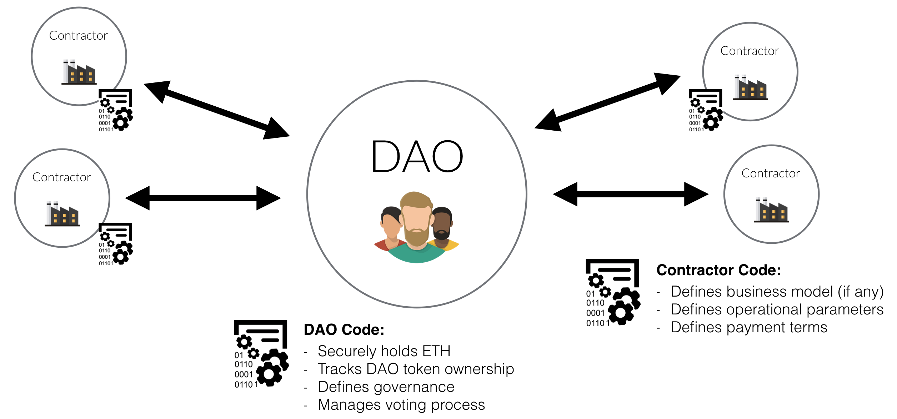
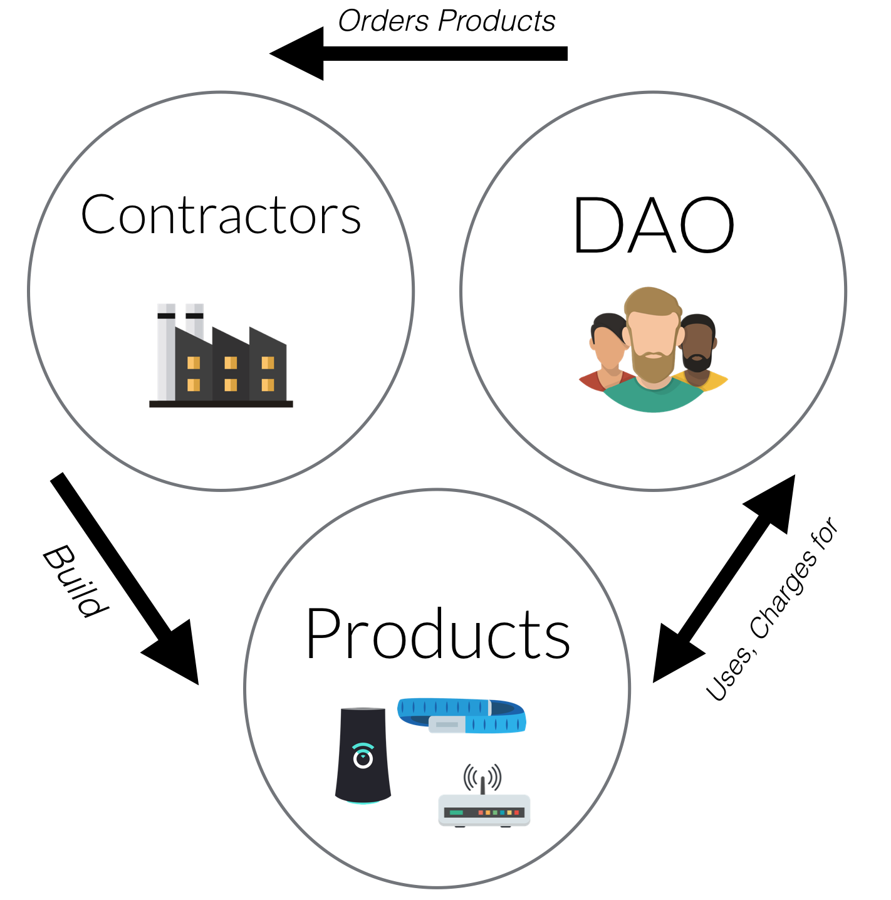

The DAO is a Decentralized Autonomous Organization (“DAO”) - more specifically, it is a new breed of human organization never before attempted. The DAO is borne from immutable, unstoppable, and irrefutable computer code, operated entirely by its members, and fueled using ETH which Creates DAO tokens. Several aspects of this structure make it revolutionary:
Inclusion: The DAO leverages smart contracts on the Ethereum blockchain so that anyone, anywhere in the world can be empowered to participate. In exchange for their early help, participants receive DAO tokens which hold many benefits.
Flexibility: The DAO backs Proposals which it selects for their innovative nature, to be delivered by Contractors. Some of these Proposals could hold no promise of return whatsoever (in the case of a charity for example), others could involve the building of products or services which The DAO could then use for its own purposes.
Profitability and Growth: The DAO charges for the use of its the products or services. This revenue is then sent directly to The DAO in the form of ETH. The DAO then has the option to accumulate this ETH to support its growth, or redistribute it to the DAO Token Holders as a reward.
Autonomous Governance: The ETH held by The DAO will never be centrally managed. DAO Token Holders are able to vote on important decisions relating to the management of The DAO, including the power to redistribute its ETH amongst themselves.
The DAO, represented by smart contracts on the Ethereum blockchain, intends to back a series of Proposals to create products or services. The DAO Token Holders will then leverage these product or services, or charge others for using them.
The DAO is self-governing and not influenced by outside forces: its software operates autonomously and its by-laws are immutably chiseled into the Ethereum blockchain. Generally, DAOs are formed by groups of like-minded individuals with specific projects and goals in mind. Its identity is formed through consensus. Its authority is defined through voluntary endorsement and, ultimately, network effects.
Would-be members of The DAO can, for a period of time Create DAO tokens by fueling The DAO with ETH. DAO Token Holders will have the right to vote on Proposals (proportional to the number of tokens held) as well as the opportunity to receive rewards generated by the output of the work from the Contractors’ Proposals.
 Fig.1 The DAO governance is independent from its Contractors
The DAO is software: it does not have the capabilities to manufacture a product, write code, develop hardware or sweep the streets. It requires actors in the physical world for most tasks—these are called Contractors.
The DAO is free to work with as many or as few Contractors in the real world as it sees fit. Contractors submit Proposals for the development of products or services—these Proposals are written in plain English and backed by a software code in the form of a smart contract that defines the relationship between The DAO and the Contractor: deliverables, responsibilities, and operating parameters. The DAO Token Holders may debate the viability and profitability of Proposals off-chain through a service chosen by The DAO’s community (discussion forums like DAOHub.org, Slack, on-chain threaded discussions, etc).
The immutable smart contract code of the Proposal binds the Contractor to the terms of the Proposal, the DAO Token Holders can elect to ‘pull the plug’ on the Contractor at anytime (subject to the terms of the accepted Proposal). This is a major advantage because it provides predictability to the Contractor while it considerably minimizes risk of default for The DAO.
The DAO may also select a replacement Contractor for any given Proposal, meaning projects can continue where they left off rather than being abandoned outright.
 Fig.2 A Synergistic Relationship
The DAO will be created for profit and be formed by individuals that have never met each other before, and its formation is the product of completely pseudonymous transactions, making it impossible to track who owns DAO tokens and in what amount.
This reality exposes The DAO to a dangerous attack: Someone could acquire 51% of The DAO tokens, and then submit a Proposal that sends all the ETH to himself. Thankfully, the concept of Curator renders this attack—and any other so-called “Tyranny of the Majority” attacks—moot.
When forming The DAO, its community nominates a Curator. Only the Curator can add Contractor addresses to the whitelist, authorizing them to receive ETH from The DAO. This means an attacker would have to become Curator if they wanted to execute their attack Proposal.
If this attacker has 51% of The DAO’s tokens, and therefore 51% of the vote, while voting themselves as the Curator is theoretically possible, a Curator election is a two step process where The DAO can ‘split’ in case there is no mutual agreement during the second round. No matter what the attacker tries, The DAO will always be able to spot their malicious Proposals and split itself proportionally to the second vote results, leaving the attacker with their own ETH and the rest of the participants in control of their own.
In other words, a Curator is a failsafe mechanism that indirectly prevents an attacker from executing a 51% attack. Curators do not add centralization to The DAO: they are nominated by the community themselves, and can be fired at any time, for any reason.
A DAO’s Curator may be anyone or any group, but The DAO is privileged to have a group of signatories that are very respected and trusted as part of the Ethereum community. From a technical standpoint, the Curator will take the form of a multisig contract held by these individuals.
The DAO will be deployed as an exact implementation of the Standard DAO Framework. The Whitepaper therefore describes perfectly how the DAO functions and is a great place to start learning more.